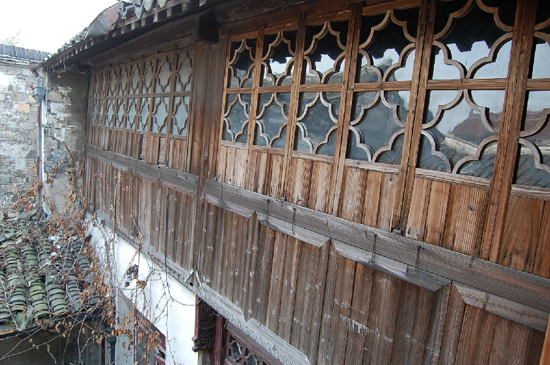

嘉兴市文物保护网 · 市级文物保护点 · 2020-11-06 · 原文

西南大街黄氏民宅位于嘉兴市秀洲区新塍镇西南大街251号，据黄氏后人介绍和建筑形制判断建于民国时期。黄氏祖上原经营“橹行”，厅上原有“润德堂”匾，现已无存。坐南朝北，砖木结构，共四进，占地面积357平方米，第一进已改造，后三进都为两开间。第二进为平房，抬梁式五檩，地面为水泥地。第三进西侧开间为黄家二房所有，东侧开间为黄家四房所有，抬梁式五檩楼房，前后各单步，系厅堂，地面铺方砖，西侧有一厢房。第四进为平房，抬梁式五檩，前后各单步，地面铺小青砖，东侧开间改动较大。黄氏家族曾在新塍镇上较有影响，民宅规模较大，第三进西侧开间保存较好，具有一定的历史和艺术价值。2010年公布为嘉兴市文物保护点。